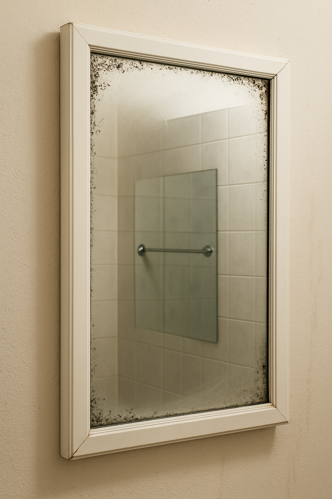

Mirror, Mirror, on the Wall: Why Are You Rusting at All?
Mirrors don’t lie — but they do corrode. That blackening around the edges? It’s not dirt. It’s oxidation of the silver backing. And once it starts, it rarely stops.
Diagnosis: Edge Decay
Most household mirrors are backed with a thin layer of metallic silver or aluminum. Over time, moisture seeps through microcracks in the protective coating — triggering oxidation and creating those telltale black blooms.
Clues You’re Looking into Entropy
- Black spots at the edges: the silver layer is oxidizing.
- Streaking along corners: water pooling or poor ventilation.
- Fog that lingers: high humidity accelerates metal decay.
- Peeling reflective backing: irreversible detachment in progress.
Countermeasures: Mirror Preservation Kit
Entropy starts at the edge — but so does prevention. Shielding the perimeter and controlling moisture buys you years.
The Fix
- Ventilate aggressively — turn on the fan before and after showers.
- Wipe down steam daily to keep moisture from pooling.
- Seal mirror edges with tape or waterproof backing.
- Avoid spraying cleaners directly onto the glass — mist runs to the edges.
- Replace failing mirrors before blackening spreads to the center.
What starts at the margins soon corrupts the whole image. Mirror entropy is quiet, slow, and final — but not inevitable. Don’t let your reflection fade into corrosion.
As an Amazon Associate, Low Entropy Detective earns from qualifying purchases.